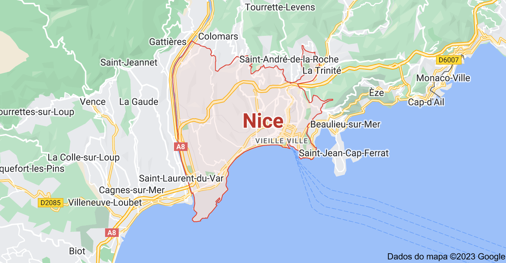

A cidade de Nice, tem cerca de 400 mil habitantes e é a segunda mais visitada por turistas naquele país,
depois de Paris. Fica na belíssima costa marítima conhecida como Côte d'Azur, onde se encontram nomes e lugares como Cannes e Mônaco, além de outros
não menos belos, embora menos famosos, como Beaulieu-sur-Mer e Antibes. Uma região belíssima, sim… e também caríssima. Todo mundo, desde mochileiros, recém-casados e até famílias adoram a experiência e o charme que Nice oferece. A gastronomia de Nice é uma das melhores da França (e você sabe que isso significa muito), a vida noturna é vibrante e a cena artística é bastante ativa. Resumindo, em Nice você poderá descansar, explorar, aprender, se aventurar e se divertir muito!


Um dos principais atrativos de Nice é a localização estratégica: situada na Côte d'Azur, também conhecida como Riviera Francesa
(costa sudeste da França no Mar Mediterrâneo). Isso faz com que Nice seja uma ótima opção de cidade base para explorar a região.
Além disso, Nice é muito próxima do Principado de Mônaco, Cannes, onde acontece o prestigioso Festival de Cinema de Cannes, um dos
festivais mais importantes do mundo. A viagem de trem entre Paris e Nice tem duração de quatro horas.
Por ser uma cidade litorânea, o período ideal para ir para Nice é no verão. Apesar disso, o inverno também pode ser bastante agradável –
embora talvez o tempo esteja frio demais para curtir a praia. É raro ter chuvas no verão, podendo ter 1 ou 2 dias de chuvas durante todos
esse período. Normalmente a temperatura passa dos 20ºC e em boa parte do tempo chega aos 30ºC. Já no inverno fica entre 5 e 15ºC e dificilmente
você vai ver neve por lá.